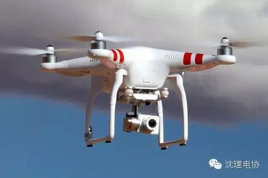
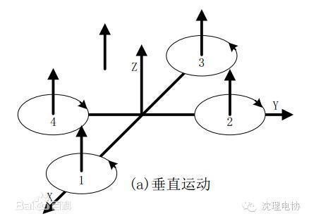
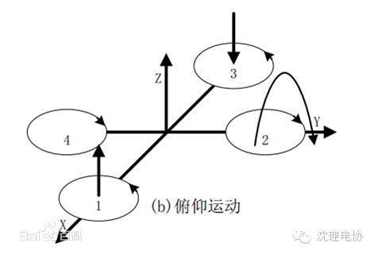
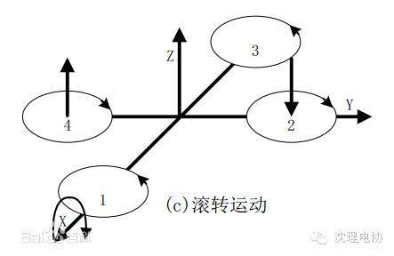
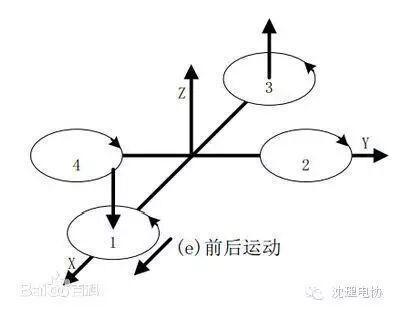
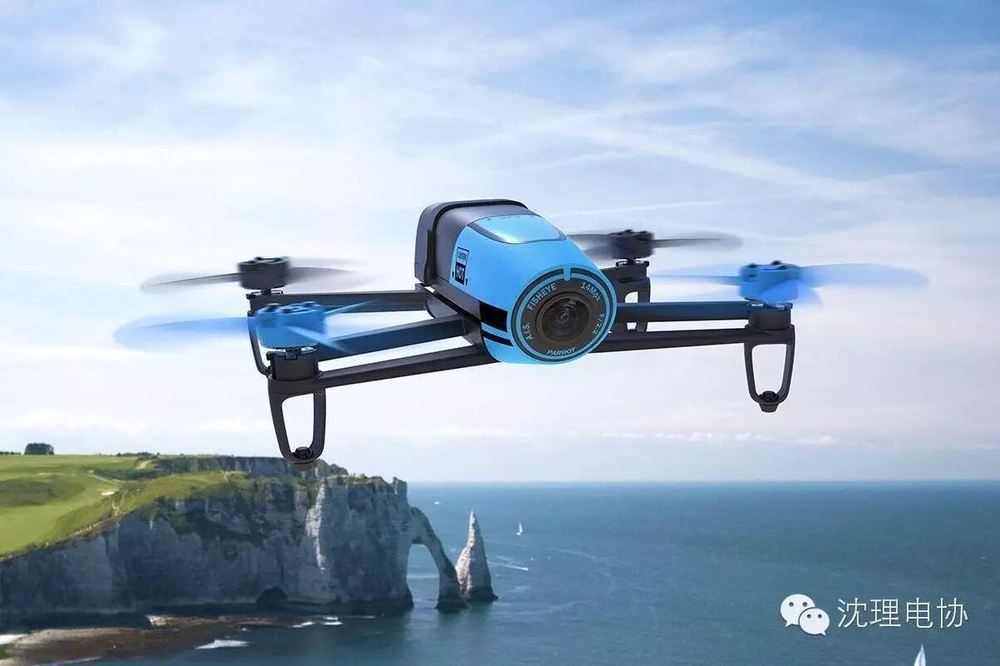

四轴飞行器的秘密

简介
四轴飞行器，又称四旋翼飞行器、四旋翼直升机，简称四轴、四旋翼。这四轴飞行器（Quadrotor）是一种多旋翼飞行器。四轴飞行器的四个螺旋桨都是电机直连的简单机构，十字形的布局允许飞行器通过改变电机转速获得旋转机身的力，从而调整自身姿态。具体的技术细节在“基本运动原理”中讲述。[1] 因为它固有的复杂性，历史上从未有大型的商用四轴飞行器。[1] 近年来得益于微机电控制技术的发展，稳定的四轴飞行器得到了广泛的关注，应用前景十分可观。国际上比较知名的四轴飞行器公司有中国大疆创新公司、法国Parrot公司、德国AscTec公司和美国3D Robotics公司。
基本运动原理
垂直运动，俯仰运动，滚转运动，偏航运动。
垂直运动
图（a）中，因有两对电机转向相反，可以平衡其对机身的
反扭矩，当同时增加四个电机的输出功率，旋翼转速增加使得总的拉力增大，当总拉力足以克服整机的重量时，四旋翼飞行器便离地垂直上升；反之，同时减小四个电机的输出功率，四旋翼飞行器则垂直下降，直至平衡落地，实现了沿z轴的垂直运动。当外界扰动量为零时，在旋翼产生的升力等于飞行器的自重时，飞行器便保持悬停状态。保证四个旋翼转速同步增加或减小是垂直运动的关键。

俯仰运动
图（b）中，电机1的转速上升，电机3的转速下降，电机2、电机4的转
速保持不变。为了不因为旋翼转速的改变引起四旋翼飞行器整体扭矩及总拉力改变，旋翼1与旋翼3转速改变量的大小应相等。由于旋翼1的升力上升，旋翼3的升力下降，产生的不平衡力矩使机身绕y轴旋转（方向如图所示），同理，当电机1的转速下降，电机3的转速上升，机身便绕y轴向另一个方向旋转，实现飞行器的俯仰运动。

滚转运动
与图（b）的原理相同，在图（c）中，改变电机2和电机4
的转速，保持电机1和电机3的转速不变，则可使机身绕x轴旋转（正向和反向），实现飞行器的滚转运动。

偏航运动
四旋翼飞行器偏航运动可以借助旋翼产生的反扭矩来实现。旋翼转动过程中由于空气阻力作用会形成与转动方向相反的反扭矩，为了克服反扭矩影响，可使四个旋翼中的两个正转，两个反转，且对角线上的各个旋翼转动方向相同。反扭矩的大小与旋翼转速有关，当四个电机转速相同时，四个旋翼产生的反扭矩相互平衡，四旋翼飞行器不发生转动；当四个电机转速不完全相同时，不平衡的反扭矩会引起四旋翼飞行器转动。在图（d）中，当电机1和电机3的转速上升，电机2和电机4的转速下降时，旋翼1和旋翼3对机身的反扭矩大于旋翼2和旋翼4对机身的反扭矩，机身便在富余反扭矩的作用下绕z轴转动，实现飞行器的偏航运动，转向与电机1、电机3的转向相反。因为电机的总升力不变，飞机不会发会垂直运动。

前后运动

要想实现飞行器在水平面内前后、左右的运动，必须在水平面内对飞行器施加一定的力。在图（e）中，增加电机3转速，使拉力增大，相应减小电机1转速，使拉力减小，同时保持其它两个电机转速不变，反扭矩仍然要保持平衡。按图（b）的理论，飞行器首先发生一定程度的倾斜，从而使旋翼拉力产生水平分量，因此可以实现飞行器的前飞运动。向后飞行与向前飞行正好相反。当然在图（b）图（c）中，飞行器在产生俯仰、翻滚运动的同时也会产生沿x、y轴的水平运动。
侧向运动
由于结构对称，所以侧向飞行的工作原理与前后运动完全一样。

四轴飞行器的发展方向
一是可作为新概念交通工具。
早在二战时，载人四轴的原型机已经被设计出来，但因为控制技术还跟不上，飞行器因不稳定而无法投入实际应用。
二是安保领域。
随着人工智能的不断发展，配备高清摄像机、各种安保设备的四轴飞行器将广泛应用在公安、消防、家庭和单位安保领域，四轴将成为极度智能、行动敏捷的电子警察、电子消防员、电子保安、电子管家，也许在不久的将来，你会因为有一个会飞的家庭照看机器人而感到无比的贴心和安全。
三是建筑领域及其它高危作业环境。
TED大会上展示的四轴飞行器（活动中播放的）的视频也许不少爱好者都看过，这是相当有前景的应用，如果用它们建造房子比起3D打印一座房子，用一群微小的四轴飞行器来构建庞大的建筑更加切合实际和灵活髙效，也许有一天你路过建筑工地，看到头顶上不是一群建筑工人在忙碌，而是一群嗡嗡作响的四轴飞行器在井然有序的工作，那个时候你可不要吃惊眼前看到的一切。